System Operator Admin
The System Operator Admin is the FuzionView system management interface.
- Use the Admin options to manage:
Data Providers
Datasets
Users
System Settings
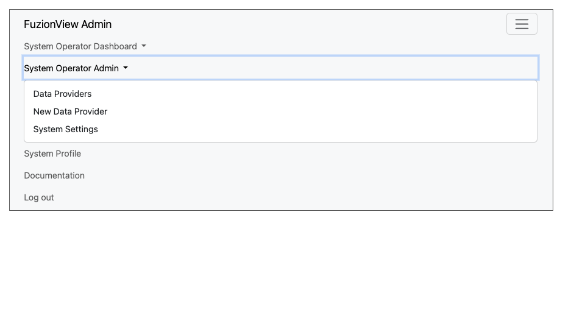
System Operator Admin Menu
Data Providers
The Data Providers menu option displays a list of all the Facility Operators and other Data Providers managed by the System Operator.
Add Data Provider
You can add as many data providers to the system as needed. At the bottom of the page is the option to add a new data provider. Select either the Plus icon or New Data Provider. Simply enter a name and click Submit. Once a Data Provider has been added, datasets can be added.
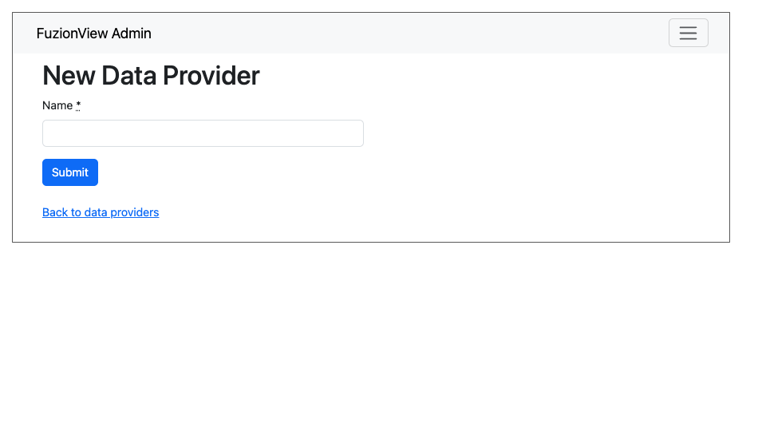
New Data Provider
Manage Data Providers
Hint
Click the Eye action icon to view and manage the Datasets configured for a Data Provider
Click the Pencil action icon to edit the name of a Data Provider
Click the Person action icon to manage users with access to a Data Provider
Click the Trashcan action icon to delete a Data Provider
Rename Data Provider
Change the name of a data provider from the Data Providers list by clicking the Pencil action icon next to the provider’s information:
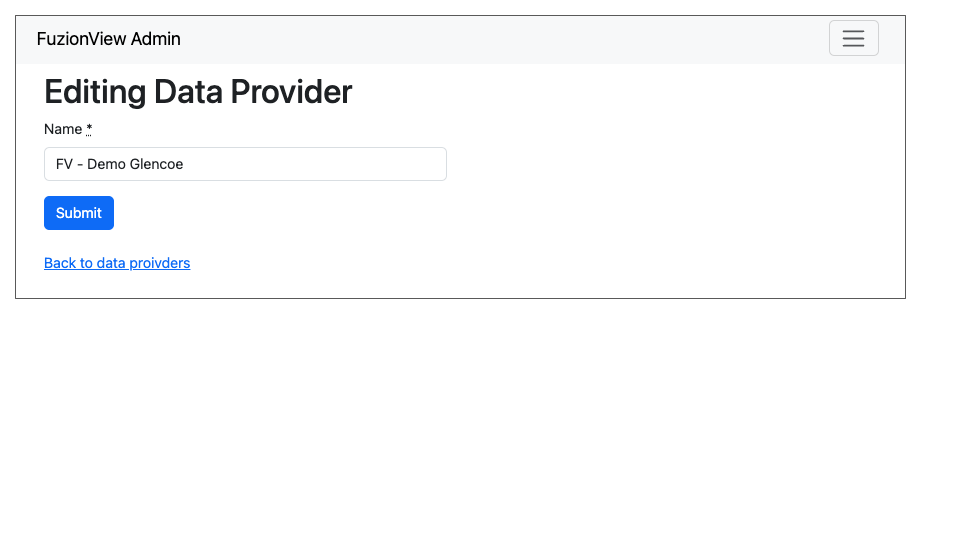
Edit Data Provider Name
Delete Data Provider
To permanently remove a data provide, click the Trashcan action icon next to the provider name.
Warning
This cannot be undone.
Delete Data Provider
Datasets
Hint
Click the Eye action icon to view and manage a dataset
Click the Pencil action icon to edit the connection for a dataset
Click the Map action icon to create a test ticket to validate the dataset connection
Click the Trashcan action icon to delete a dataset
View Datasets
To view and manage the datasets associated with a Data Provider, click the Eye action icon next to the data provider’s name. When first created, Data Providers have no datasets.

No Datasets have been added
Add Dataset
- To add the first dataset, select New Dataset and enter the information needed to connect to the dataset:
Name
Source dataset (the URL for the source ESRI or WFS)
Click Submit to add the dataset.

Add New Dataset
- Some datasets will require additional information to establish a connection. Click the option for Basic dataset entry and add the information needed to connect to your dataset:
Name
Source dataset (the URL for the source ESRI or WFS)
Source SQL
Source CO
Choose whether to Cache the whole dataset
Source SRS (the EPSG code for the coordinate system in use)
Click Submit to add the dataset.
Add New Dataset
Manage Datasets
Select the icon next to a dataset to View, Edit, or Delete it.

View, Edit, or Delete Dataset

View, Edit, or Delete Dataset
Validate Dataset
- Select the map action icon next to a dataset to create a test ticket. Use the test ticket to validate that your dataset connection is successful.
Select a Data Provider
Select a Dataset
Click the Map icon
Use the Zoom icons to find a test ticket location
Select the Polygon tool icon and draw the ticket boundary
Click Submit
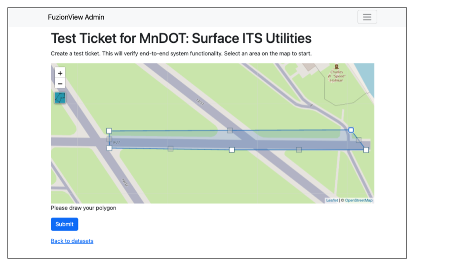
Create Test Ticket
A Pending status message is displayed. It may take up to 5 minutes for the available feature data to populate.
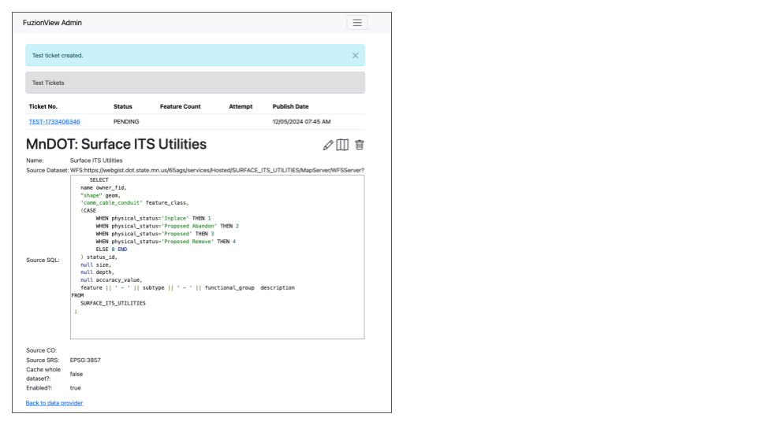
Create a Test Ticket
Once the ticket has been created, the status will update to successful
Click the Test Ticket link to view the feature data and confirm configuration
Note
The test ticket is available in the system to any authorized user of the dataset. The ticket exists for only 24 hours and will be automatically deleted.
Warning
If you select a ticket boundary outside the service area, an error message will be displayed.
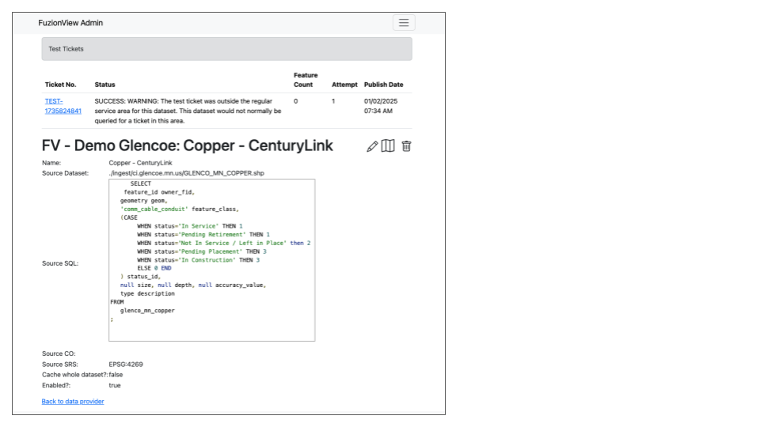
Create a Test Ticket
Users
Use the Admin interface to manage users that can securely access your facility’s datasets. When created, datasets have no users.

User Management
Select New User to add a user. Enter the email address of the new user and click Submit.

Create User
A confirmation message will display when the user has been created.

User Created
To manage existing users, select the icon next to the user you want to Edit or Delete.

Edit or Delete User
System Settings
Select System Settings from the System Operator menu to manage:
Feature Classes
Features Status
Ticket Types
Use the Eye icon to view and edit and the Plus icon to create these key elements.
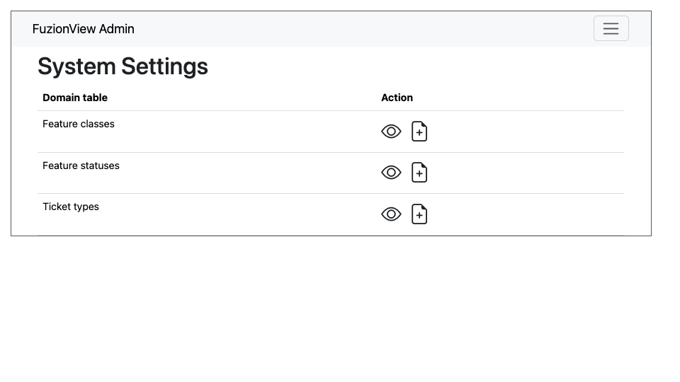
System Settings
Feature Classes
Feature Classes are used to identify a feature category - known as a LAYER in Ticket Viewer. When a ticket has features in that layer, it will be displayed on the map in a specific color to clearly identify it. Use the Pencil icon to edit and the Trashcan icon to delete.
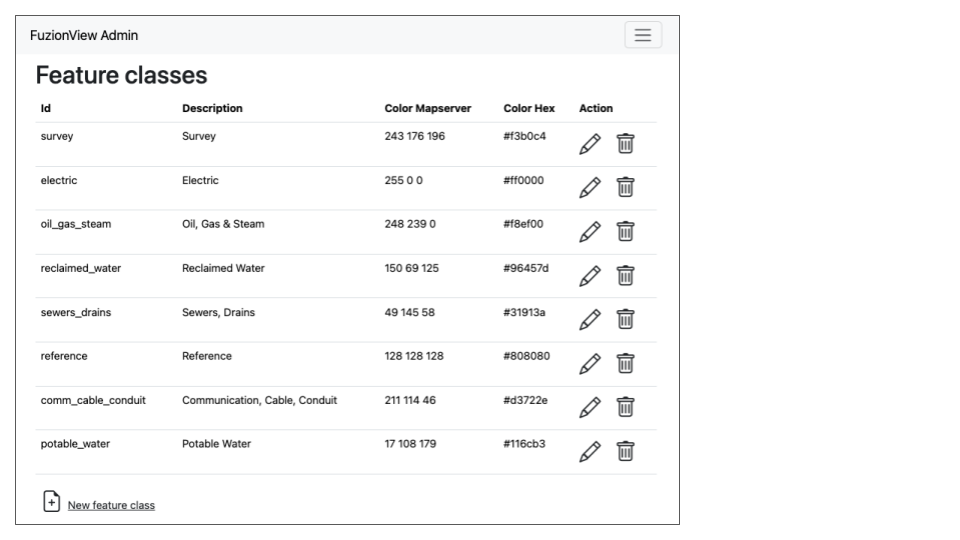
Feature Classes
Add New Feature Class
Scroll to the bottom and select the Plus icon or Add New Feature Class to identify a new feature class.
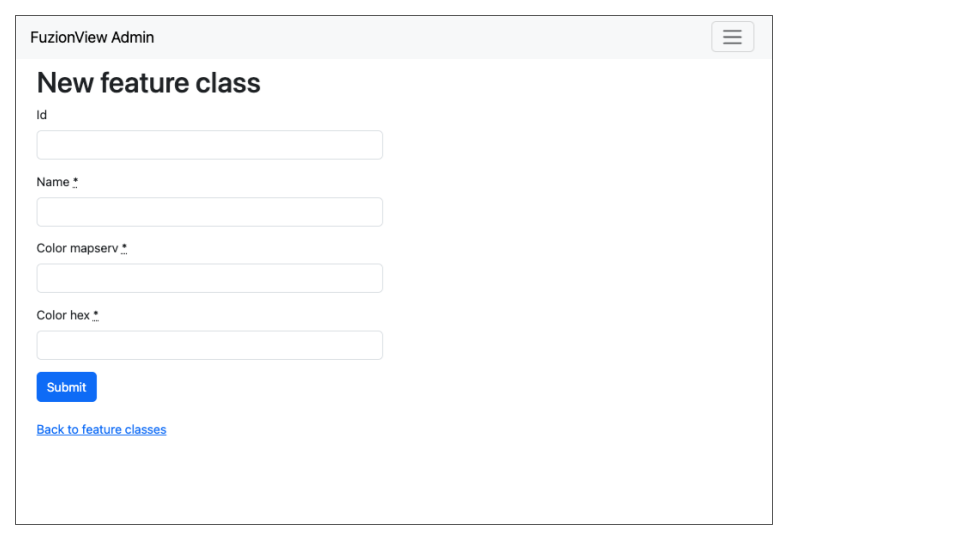
Add Feature Class Layers
Edit Feature Class
Select the Pencil icon to edit an existing Feature Class.
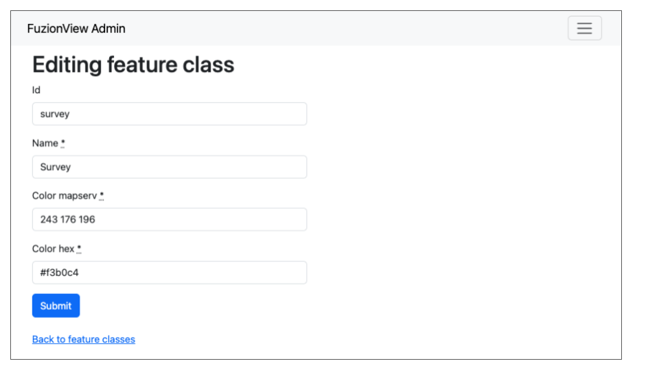
Add Feature Class Layers
Feature Statuses
Status is used to indicate whether the feature is in use and in what state of development.
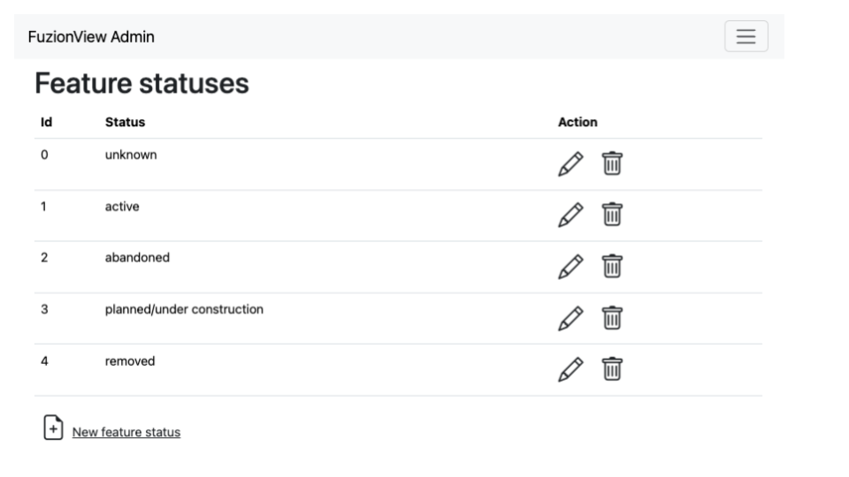
Feature Statuses
Add Feature Status
You must create a Feature Status before you configure it. Scroll to the bottom and select Add New Feature Status to identify a new usage status:
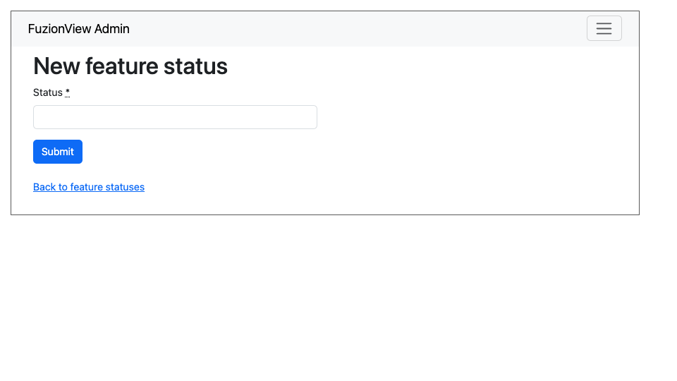
Add Feature Status - Placeholder
Edit Feature Status
Click the Pencil icon next to a status edit it
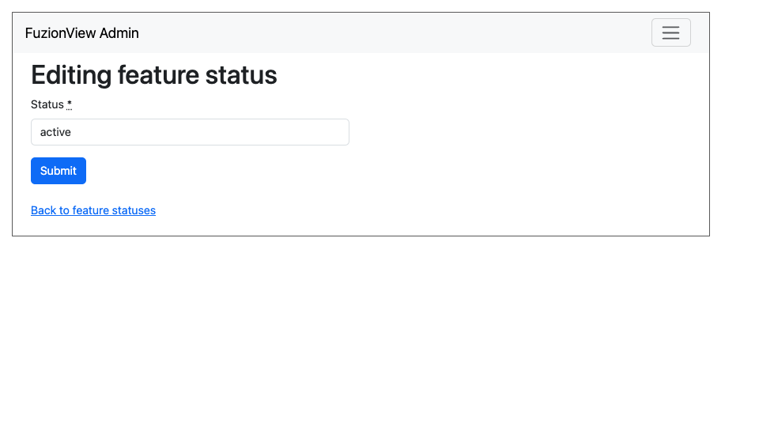
Edit Feature Status
Ticket Types
The Ticket Type is used to visually indicate the urgency of a ticket, which is used in planning response time. The current options are Normal and Emergency. Emergency tickets display with the ticket number in red.
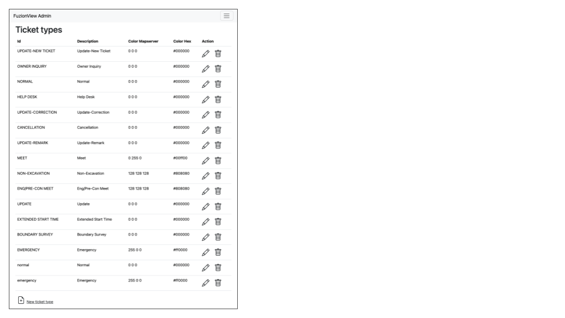
Ticket Types
Add a Ticket Type
Scroll to the bottom and select New Ticket Type to add a new level of urgency.
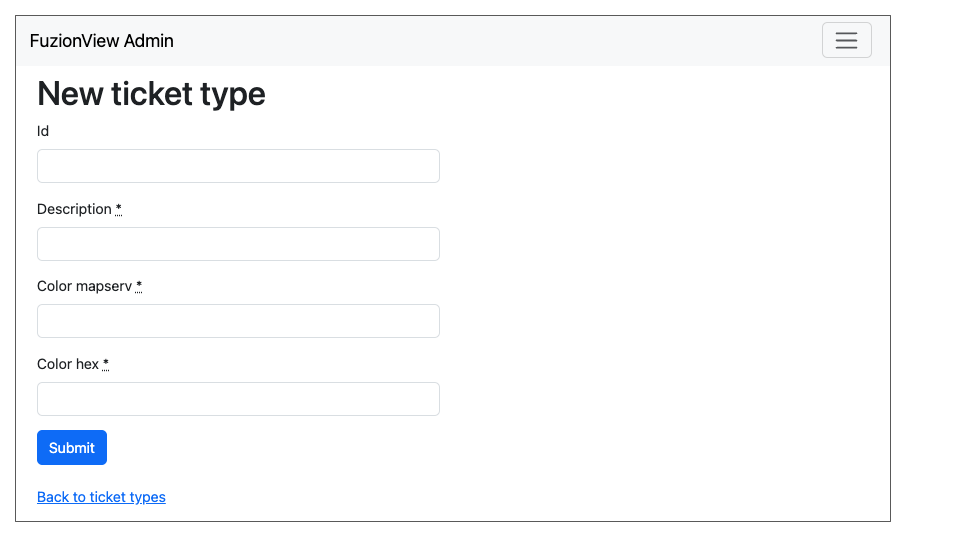
New Ticket Type
Edit Ticket Type
Click the Pencil icon to edit an existing Ticket Type:
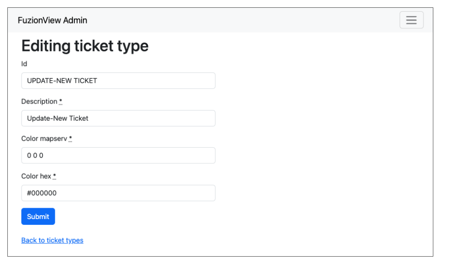
Edit Ticket Type